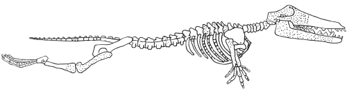
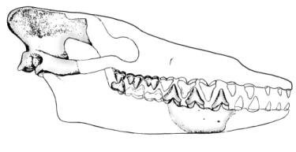
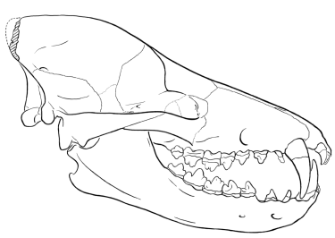
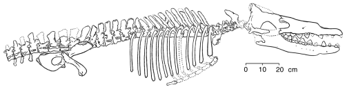
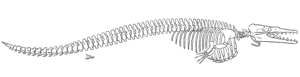

|
por Raymond Sutera Direitos autorais © 2001 [publicado: 10 de agosto de 2001] Este artigo apareceu originalmente em Reports of the National Center for Science Education, uma publicação do The National Center for Science Education. |
 |
|
Como convencer um criacionista de que um fóssil é um fóssil transicional? Desistir? Essa é uma pergunta-truque. Você não consegue. Não se convence alguém que já está decidido. Mas às vezes é ainda pior. Às vezes, quando você aponta um fóssil que cai no meio de uma lacuna e é um intermediário morfológico e cronológico notável, recebe a resposta: "Bem, agora você tem duas lacunas onde tinha só uma antes! Você está perdendo terreno!"
Um dos desafios favoritos dos anti-evolucionistas à existência de fósseis transicionais é a suposta falta de formas transicionais na evolução das baleias. Duane Gish, do Institute for Creation Research (ICR), frequentemente apresenta a transição "bossie-to-blowhole" para ridicularizar a ideia de que baleias poderiam ter evoluído de ancestrais terrestres de casco. Simplesmente não há formas transicionais no registro fóssil entre os mamíferos marinhos e seus supostos ancestrais terrestres ... É bastante divertido, começando por vacas, porcos ou búfalos, tentar visualizar como os intermediários podem ter se visto originalmente. Começando por uma vaca, alguém poderia imaginar até mesmo uma linha de descendência que ficou previamente extinta, por causa do que talvez se chamasse de falha da glândula mamária (Gish 1985: 78-9). Claro que, durante muitos anos, o registro fóssil das baleias era bastante esparso, mas agora há numerosas formas transicionais que ilustram a trajetória da evolução das baleias. Descobertas recentes de fósseis de baleias fornecem a evidência que convencerá um cético honesto. No entanto, a biologia evolutiva prevê não apenas a existência de ancestrais fósseis com certas características - também prevê que todas as outras disciplinas biológicas revelem padrões de similaridade entre baleias, seus ancestrais e outros mamíferos correlacionados com a ascendência evolutiva entre grupos. Não deve surpreender que isso seja o que encontramos, e, como os achados em uma disciplina biológica, por exemplo bioquímica, são obtidos sem referência aos achados em outra, por exemplo anatomia comparada, os cientistas consideram esses campos diferentes como evidência independente da evolução das baleias. Como esperado, essas linhas independentes de evidência confirmam todas o padrão de evolução das baleias que anteciparíamos no registro fóssil. Para ilustrar essa abordagem, apresentarei a evidência de múltiplos campos para a origem das baleias a partir de mamíferos terrestres. Este texto examinará evidência mutuamente reforçadora de nove áreas independentes de pesquisa. Claro, como ponto de partida, precisamos descrever o que faz de uma baleia uma baleia. O que é uma baleia? Uma baleia é, antes de tudo, um mamífero - um vertebrado de sangue quente que usa seu alto metabolismo para gerar calor e regular sua temperatura interna. Fêmeas de baleias dão à luz filhotes vivos, que amamentam em glândulas mamárias. Embora baleias adultas não tenham pelos corporais, elas adquirem pelos temporariamente como fetos, e algumas baleias adultas têm cerdas sensoriais ao redor da boca. Essas características são inequivocamente mamíferas. Mas uma baleia é um mamífero muito especializado com muitos caracteres únicos que não são compartilhados com outros mamíferos - muitos deles não são nem sequer compartilhados com outros mamíferos marinhos, como sirênios (peixes-boi e dugongos) e pinípedes (focas, leões-marinhos e morsas). Por exemplo, baleias têm corpos hidrodinâmicos que são grossos e arredondados, ao contrário dos corpos geralmente esguios e alongados dos peixes. A cauda de uma baleia tem nadadeiras horizontais, que são seu único meio de propulsão pela água. A nadadeira dorsal é endurecida por tecido conjuntivo, mas é carnuda e inteiramente sem ossos de sustentação. As vértebras cervicais da baleia são encurtadas e pelo menos em parte fundidas em uma única massa óssea. As vértebras atrás do pescoço são numerosas e muito semelhantes entre si; os processos ósseos que conectam as vértebras são muito reduzidos, permitindo que as costas sejam muito flexíveis e produzam fortes impulsos das nadadeiras caudais. As barbatanas que permitem à baleia manobrar são compostas de ossos de braços achatados e encurtados, ossos de punho achatados e em forma de disco e múltiplos dedos alongados. A articulação do cotovelo é praticamente imóvel, tornando a barbatana rígida. Na cintura escapular, a escápula é achatada, e não há clavícula. Algumas espécies de baleias ainda possuem um vestígio de pelve, e algumas têm membros traseiros muito reduzidos e não funcionais. A caixa torácica é muito móvel - em algumas espécies, as costelas estão totalmente separadas da coluna vertebral - o que permite que o tórax se expanda muito quando a baleia está respirando e permite que o tórax se comprima em profundidade quando a baleia está mergulhando profundamente. O crânio também tem um conjunto de características únicas entre os mamíferos. As mandíbulas se estendem para a frente, dando às baleias sua cabeça caracteristicamente longa, e os dois ossos mais frontais do maxilar superior (maxilar e pré-maxilar) são "telescopados" para trás, às vezes cobrindo totalmente o topo do crânio. A migração para trás desses ossos é o processo pelo qual as aberturas nasais se moveram para o topo do crânio, criando espiráculos e deslocando o cérebro e o aparelho auditivo para a parte traseira do crânio. Os odontocetos (baleias dentuçadas) têm um único espiráculo, enquanto os misticetos (baleias de barbatanas de filtragem) têm espiráculos pares. Nos odontocetos, há uma assimetria acentuada nos ossos telescopados e no espiráculo que fornece um meio natural de classificação. Embora os dentes frequentemente ocorram em misticetos fetais, apenas odontocetos apresentam dentes na fase adulta. Esses dentes são sempre cones ou pinos simples; eles não são diferenciados por região ou função como os dentes em outros mamíferos. (As baleias não podem mastigar sua comida; ela é triturada em vez disso em um estômago de fermentação, ou câmara muscular, contendo pedras.) Ao contrário do restante dos mamíferos, baleias não têm glândulas lacrimais, glândulas cutâneas e nem sentido olfativo. Sua audição é aguda, mas a orelha não tem abertura externa. A audição ocorre por vibrações transmitidas a um osso pesado e em forma de concha formado pela fusão dos ossos do crânio (as bullas auditivas e o periótico). Estas são, então, as principais características das baleias. Algumas mostram claramente as adaptações distintivas impostas às baleias por seu compromisso com a vida marinha; outras ligam claramente as baleias aos seus ancestrais terrestres. Outras mostram as pegadas de descendência de um ancestral terrestre comum com várias espécies antigas e modernas. De todas essas características em conjunto, podemos reconstruir a trajetória que a evolução das baleias percorreu de um ancestral terrestre até uma baleia moderna confinada aos oceanos profundos. Refletindo sobre a ancestralidade da baleia Em 1693, John Ray registrou sua percepção de que as baleias são mamíferos com base na similaridade das baleias com mamíferos terrestres (Barnes 1984). A discussão científica pré-darwiniana girava em torno de se as baleias eram descendentes de ou ancestrais de mamíferos terrestres. Darwin (1859) sugeriu que baleias surgiram de ursos, esboçando um cenário em que pressões seletivas poderiam causar a evolução dos ursos em baleias; envergonhado pelas críticas, ele removeu seus ursos nadadores hipotéticos das edições posteriores de Origin (Gould 1995). Mais tarde, Flower (1883) reconheceu que as baleias têm características rudimentares persistentes e vestigiais características de mamíferos terrestres, confirmando assim que a direção da descendência era de espécies terrestres para espécies marinhas. Com base em morfologia, Flower também associou as baleias aos ungulados; ele parece ter sido a primeira pessoa a fazer isso. No início do século XX, Eberhard Fraas e Charles Andrews sugeriram que creodontes (carnívoros primitivos, hoje extintos) eram os ancestrais das baleias (Barnes 1984). Mais tarde, WD Matthew, do American Museum of Natural History, postulou que as baleias descendiam de insetívoros, mas sua ideia nunca ganhou muito apoio (Barnes 1984). Mais tarde ainda, Everhard Johannes Slijper tentou combinar as duas ideias, alegando que as baleias descendiam do que Barnes chamou apropriadamente de "creodontes-cum-insetívoros". Entretanto, nenhum animal desse tipo foi jamais encontrado. Mais recentemente, Van Valen (1966) e Szalay (1969) associaram as primeiras baleias a condilarteos mesoníquios (um grupo de hoje extinto de ungulados carnívoros primitivos, nenhum maior que um lobo) com base em caracteres dentários. Evidências mais recentes confirmam essa avaliação. Assim, Flower estava basicamente certo. A evidência A evidência de que as baleias descendem de mamíferos terrestres está aqui dividida em nove partes independentes: paleontológica, morfológica, biológica molecular, vestigial, embrionária, geoquímica, paleoambiental, paleobiogeográfica e cronológica. Embora meu resumo da evidência não seja exaustivo, ele mostra que a visão atual da evolução das baleias é sustentada por pesquisa científica em várias disciplinas distintas. 1. Evidência paleontológica A evidência paleontológica vem do estudo da sequência fóssil de mamíferos terrestres por meio de formas cada vez mais semelhantes às baleias até o aparecimento de baleias modernas. Embora as baleias antigas (Archaeocetes) apresentem maior diversidade do que o espaço que tenho aqui para discutir, os exemplos nesta seção representam as tendências que vemos neste táxon. Embora existam duas subordens modernas de baleias (Odontocetos e Misticetos), esta discussão se concentrará na origem das baleias como uma ordem de mamíferos e deixará de lado as questões relacionadas à diversificação em subordens. Sinonyx Começamos com Sinonyx, um mesoníquio do tamanho de um lobo (um ungulado primitivo da ordem Condylarthra, que deu origem aos artiodáctilos, perissodáctilos, proboscídeos e assim por diante) do Paleoceno superior, cerca de 60 milhões de anos atrás. Os caracteres que ligam Sinonyx às baleias, indicando assim que são aparentados, incluem um focinho alongado, um forâmen jugular ampliado e um basicrânio curto (Zhou e outros 1995). A contagem de dentes era o número mamífero primitivo (44); os dentes eram diferenciados como os dentes heterodontos dos mamíferos atuais. Os molares eram dentes de cisalhamento muito estreitos, especialmente na mandíbula inferior, mas possuíam múltiplos cúspides. O alongamento do focinho é frequentemente associado à caça de peixes - todas as baleias de caça de peixes, bem como golfinhos, têm focinhos alongados. Esses caracteres eram atípicos de mesoníquios, indicando que Sinonyx já desenvolvia as adaptações que mais tarde se tornaram a base da maneira de vida especializada das baleias. Pakicetus O próximo fóssil da sequência, Pakicetus, é o cetáceo mais antigo e o primeiro arqueoceto conhecido. Ele é do Eoceno inicial do Paquistão, cerca de 52 milhões de anos atrás (Gingerich e outros 1983). Embora seja conhecido apenas por fragmentos de crânios, esses restos são muito diagnósticos, e são definitivamente intermediários entre Sinonyx e baleias posteriores. Isso é especialmente o caso dos dentes. Os molares superiores e inferiores, que têm múltiplos cúspides, ainda são semelhantes aos de Sinonyx, mas os pré-molares tornaram-se dentes triangulares simples compostos de um único cúspide serrilhado nas bordas frontal e traseira. Os dentes das baleias posteriores mostram ainda mais simplificação em triângulos serrilhados simples, como os dos tubarões carnívoros, indicando que os dentes de Pakicetus eram adaptados à caça de peixes.  Gingerich e outros (1983) publicaram esta reconstrução do crânio de Pakicetus inachus (redesenhado para RNCSE por Janet Dreyer). Um crânio bem preservado mostra que Pakicetus era definitivamente um cetáceo com uma caixa craniana estreita, uma crista sagital alta e estreita e cristas lambdoides proeminentes. Gingerich e outros (1983) reconstruíram um crânio composto com cerca de 35 centímetros de comprimento. Pakicetus não ouvia bem debaixo d'água. Seu crânio não tinha nem bulas tímpânicas densas nem seios que isolassem a área auditiva esquerda da direita - uma adaptação das baleias posteriores que permite audição direcional sob a água e impede a transmissão de sons pelo crânio (Gingerich e outros 1983). Todos as baleias vivas têm seios preenchidos com espuma junto com bulas tímpânicas densas que criam um contraste de impedância para que possam separar sons que chegam de diferentes direções. Também não há evidência em Pakicetus de vascularização do ouvido médio, necessária para regular a pressão dentro do ouvido médio durante o mergulho (Gingerich e outros 1983). Portanto, Pakicetus provavelmente era incapaz de realizar mergulhos a qualquer profundidade significativa. Esta avaliação paleontológica do nicho ecológico de Pakicetus é inteiramente consistente com a evidência gequímica e paleoambiental. No que diz respeito à audição, Pakicetus era mais terrestre do que aquático, mas a forma de seu crânio era definitivamente cetácea, e seus dentes estavam entre os estados ancestral e moderno.  Zhou e outros (1995) publicaram esta reconstrução do crânio de Sinonyx jiashanensis (redesenhado para RNCSE por Janet Dreyer). Ambulocetus Na mesma área em que Pakicetus foi encontrado, mas em sedimentos cerca de 120 metros acima, Thewissen e colegas (1994) descobriram Ambulocetus natans, "a baleia andante que nada", em 1992. Datado do Eoceno inicial ao médio, cerca de 50 milhões de anos atrás, Ambulocetus é um fóssil realmente surpreendente. Era claramente um cetáceo, mas também tinha pernas funcionais e um esqueleto que ainda permitia algum grau de locomoção terrestre. A conclusão de que Ambulocetus podia andar usando os membros posteriores é apoiada por ter uma coxa grande e robusta. Contudo, como o fêmur não tinha os pontos de inserção grandes e necessários para os músculos de locomoção, ele não poderia ter sido um caminhante muito eficiente. Provavelmente só podia andar do jeito que os leões-marinhos modernos conseguem - girando as patas traseiras para a frente e cambaleando pelo chão com a ajuda dos membros anteriores e da flexão da coluna. Ao andar, suas patas dianteiras enormes deviam apontar lateralmente em certa medida, já que, se apontassem para a frente, interfeririam entre si. Os membros anteriores também eram intermediários tanto em estrutura quanto em função. A ulna e o rádio eram fortes e capazes de suportar o peso do animal em terra. O cotovelo forte era forte, mas estava inclinado para trás, tornando possíveis impulsos para trás do antebraço para natação. Contudo, os punhos, ao contrário dos de baleias modernas, eram flexíveis. É óbvio pela anatomia da coluna vertebral que Ambulocetus certamente nadava com a espinha oscilando para cima e para baixo, impulsionado pelos pés traseiros, orientados para trás. Como em outros mamíferos aquáticos que usam esse método de natação, os pés traseiros eram bastante grandes. De forma incomum, os dedos dos pés traseiros terminavam em casco, exibindo assim a ancestralidade ungulada do animal. A única vértebra caudal encontrada é longa, tornando provável que a cauda também fosse longa. As vértebras cervicais eram relativamente longas, em comparação com as de baleias modernas; Ambulocetus deve ter tido um pescoço flexível. O crânio de Ambulocetus era bastante cetáceo (Novacek 1994). Tinha um focinho longo, dentes muito semelhantes aos de arqueocetos posteriores, um arco zigomático reduzido e uma bula timpânica (que sustenta o tímpano) pouco fixada ao crânio. Embora Ambulocetus aparentemente não tivesse espiráculo, os demais caracteres cranianos qualificam Ambulocetus como cetáceo. As características pós-cranianas estão claramente em adaptação transicional ao meio aquático. Assim, Ambulocetus é melhor descrito como um anfíbio do tamanho de um leão-marinho e predador de peixes que ainda não estava totalmente desconectado da vida terrestre de seus ancestrais. Rodhocetus No Eoceno médio (46-47 milhões de anos atrás) Rodhocetus levou todas essas mudanças ainda mais adiante, embora ainda retivesse um número de características terrestres primitivas (Gingerich e outros 1994). É o arqueoceto mais antigo do qual todas as vértebras torácicas, lombares e sacrais foram preservadas. As vértebras lombares tinham espinhas neurais mais altas do que em baleias anteriores. O tamanho dessas extensões no topo das vértebras, onde os músculos se inserem, indica que Rodhocetus desenvolveu uma cauda poderosa para nadar.  Gingrich e outros (1994) publicaram esta reconstrução do esqueleto de Rodhocetus kasrani (redesenhado para RNCSE por Janet Dreyer). Em outra parte da coluna, as quatro grandes vértebras sacrais não estavam fundidas. Isso dava mais flexibilidade à coluna e permitia um impulso mais poderoso enquanto nadava. Também é provável que Rodhocetus tivesse uma barbatana caudal, embora essa característica não esteja preservada nos fósseis conhecidos: possuía características - vértebras cervicais encurtadas, vértebras caudais proximais robustas e pesadas, e grandes espinhas dorsais nas vértebras lombares para grandes inserções musculares caudais e de eixo - que são associadas, em baleias modernas, ao desenvolvimento e uso de barbatanas caudais. No conjunto, Rodhocetus devia ser um excelente nadador de cauda, e é a baleia fóssil mais antiga dedicada a esse modo de natação. A bacia de Rodhocetus era menor do que a de seus predecessores, mas ainda estava conectada às vértebras sacrais, o que significa que Rodhocetus ainda podia andar na terra em algum grau. No entanto, o ílio da bacia era curto em comparação com o dos mesoníquios, o que resultava em um impulso muscular menos poderoso do quadril durante a locomoção, e o fêmur era cerca de 1/3 menor do que o de Ambulocetus, de modo que Rodhocetus provavelmente não se movia tão bem em terra quanto seus predecessores (Gingerich e outros 1994). O crânio de Rodhocetus era relativamente grande em comparação com o restante do esqueleto. As pré-maxilas e mandíbulas tinham se estendido para frente ainda mais do que seus predecessores, alongando o crânio e tornando-o ainda mais cetáceo. Os molares têm cúspides mais altas que em baleias anteriores e estão muito simplificados. Os molares inferiores são mais altos do que largos. Há uma diferenciação reduzida entre os dentes. Pela primeira vez, as narinas deslocaram-se para trás ao longo do focinho e ficaram localizadas acima dos caninos, mostrando a evolução do espiráculo. As bulas auditivas são grandes e feitas de osso denso (características únicas dos cetáceos), mas aparentemente não continham os seios típicos de baleias posteriores, o que torna questionável se Rodhocetus possuía audição direcional subaquática. No geral, Rodhocetus mostrou melhorias em relação às baleias anteriores por meio de um tórax profundo e esguio, cabeça mais longa, maior flexibilidade vertebral e musculatura relacionada à cauda expandida. O aumento de flexibilidade e força nas costas e na cauda, com a redução de força e tamanho dos membros, indicou que era um bom nadador de cauda com capacidade reduzida de caminhar em terra. Basilosaurus O fóssil de baleia particularmente conhecido Basilosaurus representa o próximo grau evolutivo na evolução das baleias (Gingerich 1994). Viveu durante o Eoceno tardio e a última parte do Eoceno médio (35-45 milhões de anos atrás). Basilosaurus era um animal longo, fino e serpentino que originalmente se pensava ser o restante de um serpente marinha (daí o nome, que na verdade significa "lagarto rei"). Seu comprimento corporal extremo (cerca de 15 metros) parece devido a uma característica única entre as baleias; suas 67 vértebras são tão longas em comparação com outras baleias da época e com baleias modernas que provavelmente representa uma especialização que o diferencia da linhagem que deu origem às baleias modernas. O que torna Basilosaurus uma baleia particularmente interessante, no entanto, é a anatomia distintiva de seus membros traseiros (Gingerich e outros 1990). Ele tinha uma cintura pélvica quase completa e um conjunto de ossos dos membros traseiros. As extremidades eram pequenas demais para propulsão eficaz, com menos de 60 cm de comprimento nesse animal de 15 metros, e a cintura pélvica estava totalmente isolada da coluna vertebral, de modo que o suporte de peso era impossível. Reconstruções do animal o colocaram com as pernas externas ao corpo - uma configuração que representaria uma forma intermediária importante na evolução das baleias. Embora nenhuma barbatana caudal tenha sido encontrada (já que elas não contêm ossos e é improvável fossilizarem), Gingerich e outros (1990) observaram que a coluna vertebral de Basilosaurus compartilha características de baleias que têm barbatanas caudais. A cauda e as vértebras cervicais são mais curtas que as regiões torácica e lombar, e Gingerich e outros (1990) tomam essas proporções vertebrais como evidência de que Basilosaurus provavelmente também tinha uma barbatana caudal. Outra evidência de que Basilosaurus passou a maior parte do tempo na água vem de outra mudança importante no crânio. Este animal tinha uma única narina grande que migrou uma curta distância para trás até um ponto correspondente ao terço posterior da arcada dentária. A movimentação do extremo anterior do focinho para uma posição mais próxima da parte superior da cabeça é característica apenas de mamíferos que vivem em ambientes marinhos ou aquáticos. Dorudon Dorudon foi contemporâneo de Basilosaurus no Eoceno tardio (cerca de 40 milhões de anos atrás) e provavelmente representa o grupo mais provável de ancestral dos cetáceos modernos (Gingerich 1994). Dorudon não tinha as vértebras alongadas de Basilosaurus e era muito menor (cerca de 4-5 metros de comprimento). A dentição de Dorudon era semelhante à de Basilosaurus; seu crânio, em comparação com os crânios de Basilosaurus e das baleias anteriores, era um tanto abobadado (Kellogg 1936). Dorudon também ainda não tinha a anatomia craniana que indica a presença do aparelho necessário para ecolocalização (Barnes 1984).  Gingrich e Uhen (1996) publicaram esta reconstrução do esqueleto de Dorudon atrox (redesenhado para RNCSE por Janet Dreyer). Basilosaurus e Dorudon eram baleias totalmente aquáticas (como Basilosaurus, Dorudon tinham membros traseiros muito pequenos que podiam projetar-se ligeiramente além da parede corporal). Não estavam mais ligados à terra; de fato, não teriam sido capazes de se mover em terra de modo algum. Seu tamanho e a falta de membros que pudessem sustentar seu peso os tornaram mamíferos obrigatoriamente aquáticos, uma tendência que é elaborada e reforçada por táxons subsequentes de baleias. Claramente, mesmo que olhemos apenas para a evidência paleontológica, a alegação criacionista de "Sem intermediários fósseis!" está errada. Na verdade, no caso das baleias, temos vários, arranjados belamente em ordem morfológica e cronológica. Ao resumir a evidência paleontológica, observamos as mudanças consistentes que indicam uma série de adaptações de ambientes mais terrestres para mais aquáticos conforme avançamos da espécie mais ancestral à mais recente. Essas mudanças afetam a forma do crânio, a forma dos dentes, a posição das narinas, o tamanho e a estrutura tanto dos membros anteriores quanto dos posteriores, o tamanho e a forma da cauda e a estrutura do ouvido médio conforme se relaciona com a audição direcional subaquática e o mergulho. A evidência paleontológica registra uma história de adaptação crescente à vida na água - não a qualquer modo de vida na água, mas à vida como vivida por baleias contemporâneas. 2. Evidência morfológica O exame das características morfológicas compartilhadas pelos fósseis de baleias e pelos ungulados vivos torna ainda mais clara sua ancestralidade comum. Por exemplo, a anatomia do pé de Basilosaurus alia as baleias aos artiodáctilos (Gingerich e outros 1990). O eixo de simetria do pé nesses fósseis de baleia está entre o 3º e o 4º dígitos. Esse arranjo é chamado de paraxônico e é característico dos artiodáctilos, das baleias e dos condilarteos, e raramente é encontrado em outros grupos (Wyss 1990). Outro exemplo envolve o bigorna (o "âmbar" do ouvido médio). A bigorna de Pakicetus, preservada em pelo menos um exemplar, é morfologicamente intermediária em todos os caracteres entre a bigorna de baleias modernas e a de artiodáctilos modernos (Thewissen e Hussain 1993). Adicionalmente, a articulação entre martelo (malleus) e bigorna da maioria dos mamíferos é orientada em um ângulo entre o meio e a frente do animal (rostromedial), enquanto em baleias modernas e ungulados ela é orientada em ângulo entre o lado e a frente (rostrolateral). Em Pakicetus, o primeiro fóssil de cetáceo, a articulação está orientada anteriormente (rostralmente), intermediária em posição entre as condições ancestral e derivada. Assim, a articulação claramente girou em direção ao meio a partir da condição ancestral em mamíferos terrestres (Thewissen e Hussain 1993); Pakicetus nos fornece uma instantânea dessa transição. 3. Evidência biológica molecular A hipótese de que as baleias descendem de mamíferos terrestres prevê que baleias vivas e mamíferos terrestres vivos intimamente relacionados devam mostrar semelhanças em sua biologia molecular aproximadamente em proporção à recência de seu ancestral comum. Ou seja, baleias devem ser mais semelhantes em sua biologia molecular a grupos de animais com os quais compartilham um ancestral comum mais recente do que a outros animais que exibem similaridades convergentes em morfologia, ecologia ou comportamento. Em contraste, o criacionismo não possui base científica para prever quais deveriam ser os padrões de similaridade, pois não há como prever cientificamente como o criador decidiu distribuir similaridades moleculares entre as espécies. Estudos moleculares de Goodman e outros (1985) mostram que as baleias estão mais próximas dos ungulados do que de todos os outros mamíferos - um resultado consistente com as expectativas evolutivas. Esses estudos examinaram mioglobina, cristalino alfa do cristalino e citocromo c em um estudo de 46 espécies diferentes de mamíferos. Miyamoto e Goodman (1986) posteriormente ampliaram o número de sequências de proteínas incluindo alfa e beta hemoglobinas e ribonuclease; também aumentaram o número de mamíferos incluídos no estudo para 72. Os resultados foram os mesmos: as baleias claramente estão incluídas entre os ungulados. Outros estudos moleculares sobre vários genes, proteínas e enzimas por Irwin e outros (1991), Irwin e Arnason (1994), Milinkovitch (1992), Graur e Higgins (1994), Gatesy e outros (1996) e Shimamura e outros (1997) também identificaram as baleias como intimamente relacionadas aos artiodáctilos, embora haja diferenças nos detalhes entre os estudos. Ao colocar as baleias próximas e mesmo firmemente dentro dos artiodáctilos, esses estudos moleculares confirmam as previsões feitas pela teoria evolutiva. Este padrão de similaridades bioquímicas deve estar presente se as baleias e os ungulados, especialmente os artiodáctilos, compartilham um ancestral comum próximo. O fato de essas similaridades estarem presentes é, portanto, forte evidência da descendência comum de baleias e ungulados. 4. Evidência vestigial Os caracteres vestigiais das baleias nos dizem duas coisas. Eles nos dizem que as baleias, como tantos outros organismos, têm características que não fazem sentido de uma perspectiva de design - não têm função atual, exigem energia para serem produzidas e mantidas e podem ser deletérias para o organismo. Eles também nos dizem que as baleias carregam um pedaço de seu passado evolutivo consigo, destacando uma história de ancestralidade terrestre. Baleias modernas frequentemente retêm vestígios alongados de ossos pélvicos, fêmures e tíbias, todos embutidos na musculatura das paredes corporais. Esses ossos são mais pronunciados em espécies mais antigas e menos pronunciados em espécies posteriores. Como mostra o exemplo de Basilosaurus, baleias de idade intermediária têm pelves vestigiais e ossos dos membros traseiros de tamanho intermediário. As baleias também retêm uma série de estruturas vestigiais em seus órgãos de sensação. Baleias modernas têm apenas nervos olfatórios vestigiais. Além disso, nas baleias modernas o meato auditivo (a abertura externa do canal auditivo) é fechado. Em muitas, é apenas do tamanho de um fio fino, com cerca de 1 mm de diâmetro, e muitas vezes fechado em meias-alturas. Todas as baleias têm vários músculos pequenos dedicados a orelhas externas inexistentes, que aparentemente são vestígios de uma época em que eram capazes de mover as orelhas - comportamento tipicamente usado por animais terrestres para audição direcional. O diafragma nas baleias é vestigial e tem pouquíssimo músculo. As baleias usam o movimento para fora das costelas para encher os pulmões de ar. Finalmente, Gould (1983) relatou várias ocorrências de cachalotes capturados com membros posteriores visíveis e proeminentes. Da mesma forma, golfinhos foram observados com pequenas nadadeiras pélvicas, embora provavelmente não fossem sustentadas por ossos de membros como nos raros cachalotes. E algumas baleias, como as belugas, possuem pavilhões auriculares rudimentares - uma característica que não pode servir a nenhuma função em um animal sem orelha externa e que pode reduzir a eficiência de natação aumentando o arrasto hidrodinâmico durante a natação. Embora esta lista de modo algum seja exaustiva, fica claro que as baleias têm uma riqueza de características vestigiais herdadas de seus ancestrais terrestres. 5. Evidência embrionária Como os recursos vestigiais, as características embrionárias também nos dizem duas coisas. Em primeiro lugar, o embrião da baleia desenvolve uma série de características que depois abandona antes de atingir a forma final. Como o criacionismo pode explicar tal processo aparentemente sem sentido, construindo estruturas apenas para abandoná-las ou destruí-las depois? Darwin (1859) fez a mesma pergunta. Não faria mais sentido ter embriões atingirem suas formas adultas rapidamente e diretamente? Parece irrazoável para um designer perfeito ou criador enviar o embrião por uma trajetória tão tortuosa, mas a evolução exige que novas características sejam construídas sobre a base de características anteriores que depois modificará ou descartará. Em segundo lugar, a embriologia da baleia, examinada em detalhe, também fornece evidência de sua ancestralidade terrestre. Como embriões, não menos que como animais adultos, baleias são depósitos de sucata de antigas características descartadas que não têm mais utilidade para elas. Muitas baleias, enquanto ainda no útero, começam a desenvolver pelos corporais. Ainda assim, nenhuma baleia moderna mantém pelos corporais após o nascimento, exceto alguns pelos de focinho e pelos ao redor de seus espiráculos usados como cerdas sensoriais em poucas espécies. O fato de as baleias possuírem os genes para produzir pelos corporais mostra que seus ancestrais tinham pelos corporais. Em outras palavras, seus ancestrais eram mamíferos comuns. Em muitos embriões de baleia, brotos de membros traseiros externos são visíveis por algum tempo, mas desaparecem à medida que a baleia cresce. Também são visíveis no embrião pinas auriculares rudimentares, que desaparecem antes do nascimento (exceto naqueles que as carregam como atavismos raros). E, em algumas baleias, os lobos olfativos do cérebro existem apenas no feto. O embrião da baleia começa com as narinas no local habitual dos mamíferos, na ponta do focinho. Mas durante o desenvolvimento, as narinas migram para sua posição final no topo da cabeça para formar o espiráculo (ou os espiráculos). Também podemos entender a evolução entre as próprias baleias por sua embriologia. Sabemos que as baleias de barbatanas evoluíram dos cetáceos dentuçados: alguns embriões de misticetos começam a desenvolver dentes. Como no caso de pelos corporais, os dentes desaparecem antes do nascimento. Como não há utilidade para dentes no útero, apenas a herança de um ancestral comum faz sentido; não há razão para o designer inteligente ou criador especial fornecer dentes a embriões de baleia. Assim temos mais um campo independente em total concordância com a tese geral - de que as baleias possuem características que as conectam a ancestrais mamíferos terrestres, em particular aos mamíferos de casco. 6. Evidência geoquímica As baleias mais antigas viveram em habitats de água doce, mas os ancestrais das baleias modernas migraram para habitats marinhos e tiveram, portanto, de se adaptar a beber água salgada. Como água doce e água salgada têm razões isotópicas de oxigênio ligeiramente diferentes, podemos prever que a transição ficará registrada nos restos esqueléticos das baleias - os mais duradouros são os dentes. Como esperado, os dentes fósseis das baleias mais antigas têm razões menores de oxigênio pesado para oxigênio leve, indicando que os animais bebiam água doce (Thewissen e outros 1996). Dentes de baleias fósseis posteriores têm proporções maiores de oxigênio pesado para oxigênio leve, indicando que bebiam água salgada. Isso reforça totalmente a inferência derivada de toda a outra evidência discutida aqui: os ancestrais das baleias modernas adaptaram-se de habitats terrestres para habitats de água salgada por meio de habitats de água doce. 7. Evidência paleoambiental A evolução faz outras previsões sobre a história dos táxons com base na visão de "panorama geral" dos fósseis em um contexto ambiental mais amplo. A sequência dos fósseis de baleias e suas mudanças também deve relacionar-se a mudanças observadas nos registros fósseis de outros organismos no mesmo período e em ambientes similares. Os fósseis de outros organismos associados aos fósseis de baleias indicam o ambiente em que as baleias viveram. Além disso, essa evidência deve ser consistente com a evidência de outras áreas de estudo. Deveríamos esperar encontrar evidência de uma série de ambientes de transição, de totalmente terrestres até totalmente marinhos, ocupados pela série de espécies de baleias no registro fóssil. A morfologia de Sinonyx indica que ele era totalmente terrestre. Não deve surpreender, portanto, que seus fósseis sejam encontrados associados aos fósseis de outros animais terrestres. Pakicetus provavelmente passou muito tempo na água em busca de alimento. Embora a fauna de mamíferos encontrada com Pakicetus consistisse de roedores, morcegos, vários artiodáctilos, perissodáctilos e proboscídeos, e até um primata (Gingerich e outros 1983), também há animais aquáticos como caracóis, peixes, tartarugas e crocodilianos. Além disso, o sedimento associado a Pakicetus mostra evidência de fluxo corrente de água, geralmente associado a solos carregados pela água. A evidência paleoambiental mostra com clareza que Pakicetus viveu no ambiente terrestre alagadiço de baixa altitude, fazendo excursões ocasionais em água doce. Interessantemente, dentes decíduos e permanentes do animal são encontrados nesses sedimentos com frequência semelhante, apoiando a ideia de que Pakicetus dava à luz em terra firme. Os sedimentos em que Ambulocetus foi encontrado contêm impressões foliares bem como fósseis do turbo-caracol Turritella e outros moluscos marinhos. Claramente, a presença de tais fósseis significa que o fóssil de Ambulocetus foi encontrado em um que já foi um mar raso - embora folhas possam ser arrastadas para o mar e fossilizar-se lá, moluscos marinhos não seriam encontrados em terra. Rodhocetus é encontrado em xistos verdes depositados na zona necrítica profunda (equivalente à parte externa da plataforma continental). Como os xistos verdes se associam a águas de fundo com baixo oxigênio, Rodhocetus deve ter vivido em profundidades maiores que qualquer cetáceo anterior. O fato de ser encontrado com foraminíferos planctônicos e outros microfósseis concorda com essa determinação de profundidade da água. Basilosaurus e Dorudon foram encontrados em uma variedade de tipos de sedimento (Kellogg 1936), indicando que eram de ampla distribuição e capazes de viver em águas profundas quanto rasas. Da evidência paleoambiental, podemos ver claramente que, à medida que as baleias evoluíram, elas avançaram para águas mais profundas e tornaram-se progressivamente liberadas dos ambientes terrestres e de litoral. 8. Evidência paleobiogeográfica A evidência geográfica também é consistente com os padrões de distribuição esperados para o primeiro aparecimento das baleias e sua posterior expansão geográfica. Esperaríamos que espécies terrestres tivessem uma distribuição geográfica mais restrita que espécies marinhas, que têm essencialmente todo o oceano como seu alcance geográfico. A distribuição de Sinonyx está restrita à Ásia Central. Exemplares de Pakicetus só foram encontrados no Paquistão; Ambulocetus e Rodhocetus parecem igualmente restritos. Em contraste, Basilosaurus e Dorudon, que representam as baleias mais adaptadas à vida no mar aberto, são encontrados em uma área bem mais ampla. Seus fósseis foram encontrados tão longe do sul da Ásia quanto Geórgia, Louisiana e British Columbia. Durante o Eoceno, a maioria das áreas onde foram encontrados fósseis de baleias posteriores estava relativamente próxima umas das outras. De fato, a maioria fica ao longo da margem externa de um mar antigo chamado Tetis, dos remanescentes do qual hoje são o Mediterrâneo, o Cáspio, o Negro e o Mar de Aral. A distribuição biogeográfica de fósseis de baleias corresponde ao padrão previsto pela evolução: as baleias são inicialmente encontradas em uma área geográfica bastante pequena e não se tornaram distribuídas pelo mundo até depois de evoluírem em animais totalmente aquáticos que já não estavam mais ligados à terra. 9. Evidência cronológica A última linha de evidência em nossa imagem mutuamente consistente de origens de baleias vem da consideração de por que as baleias se originaram quando se originaram. A evolução é uma resposta a desafios e oportunidades ambientais. Durante o início do Cenozóico, os mamíferos foram apresentados com um novo conjunto de oportunidades de radiação e diversificação devido, em parte, ao vácuo deixado pelas extinções em massa no fim do Período Cretáceo. Como os répteis já não predominavam, havia novas formas pelas quais os mamíferos poderiam sobreviver. No caso específico das baleias, os répteis nadadores dos oceanos do mundo já não podiam manter os mamíferos afastados da costa. Antes das extinções do Cretáceo tardio, os répteis marinhos mesozóicos, como plesiossauros, ictiossauros, mosassauros e crocodilos marinhos, certamente teriam devorado qualquer mamífero que se afastasse da costa em busca de alimento. Uma vez que esses predadores desapareceram, a evolução rapidamente produziu mamíferos, incluindo baleias, que eram tão à vontade no mar como antes eram em terra. A transição levou cerca de 10 a 15 milhões de anos para produzir baleias totalmente aquáticas e mergulhadoras profundas com audição direcional subaquática. A evolução prevê que as baleias não poderiam ter surgido e radiado com sucesso antes do Eoceno, e que os mamíferos deveriam ter radiado em ambientes marinhos como radiaram em uma grande variedade de outros ambientes abandonados pelos répteis no final do Cretáceo. Conclusão Tomados em conjunto, todas essas evidências apontam para uma única conclusão - que as baleias evoluíram de mamíferos terrestres. Vimos que há nove áreas independentes de estudo que fornecem evidência de que as baleias compartilham um ancestral comum com mamíferos de casco. O poder da evidência de áreas de estudo independentes que apoiam a mesma conclusão torna totalmente irrazoáveis refutações por cenários de criação especial, incredulidade pessoal, argumento do desconhecimento ou cenários de design inteligente. A única conclusão científica plausível é que as baleias realmente evoluíram de mamíferos terrestres. Assim, não importa quanto anti-evolucionistas proclamem sobre quão impossível é para mamíferos peludos e terrestres evoluírem em baleias totalmente aquáticas, a própria evidência as desmente. Este é o poder de usar linhas de evidência mutuamente reforçadoras e independentes. Espero que se torne uma arma importante para derrubar objeções anti-evolucionistas sem fundamento e para apoiar o pensamento evolucionista no público em geral. É assim que a ciência real funciona, e devemos enfatizar o processo de inferência científica enquanto destacamos as conclusões que os cientistas extraem da evidência - de que as previsões concordantes de campos científicos independentes confirmam o mesmo padrão de ancestralidade de baleias. agradecimentos Gostaria de agradecer ao Dr. Philip Gingerich por sua ajuda com a revisão deste artigo. Referências Barnes LG. Search for the first whale. Oceans 1984 March-April; 17 (2): 20-3. Darwin CR. On the Origin of Species. New York: Random House, 1859. Flower WH. On the arrangement of the orders and families of existing Mammalia. Proceedings of the Zoological Society of London 1883 Aug; 1: 178-86. Gatesy J, Hayashi C, Cronin MA, Arctander P. Evidence from milk casein genes that cetaceans are close relatives of hippopotamid artiodactyls. Molecular Biology and Evolution 1996; 13 (7): 954-63. Gingerich P. The whales of Tethys. Natural History 1994 April; 103 (4): 86-8. Gingerich P, Raza SM, Arif M, Anwar M, Zhou X. New whale from the Eocene of Pakistan and the origin of cetacean swimming. Nature 1994; 368: 844-7. Gingerich P, Smith BH, Simons EL. Hind limbs of Eocene Basilosaurus: evidence of feet in whales. Science 1990; 249: 154-7. Gingerich P, Wells NA, Russell DE, Shah SMI. Origin of whales in epicontinental remnant seas: new evidence from the early Eocene of Pakistan, Science 1983; 220: 403-6. Gish DT. Evolution: The Challenge of the Fossil Record. El Cajon (CA): Creation-Life Publishers, 1985. Goodman M, Czelusniak J, Beeber J. Phylogeny of primates and other eutherian orders: a cladistic analysis using amino acid and nucleotide sequence data. Cladistics 1985; 1 (2): 171-85. Gould SJ. Hen's teeth and horse's toes. In: Hen's Teeth and Horse's Toes. Norton: New York, 1983. p 177-86. Gould SJ. Hooking leviathan by its past. In: Dinosaur in a Haystack, New York: Harmony Books, 1995. p 359-76. Graur D, Higgins DG. Molecular evidence for the inclusion of cetaceans within the order Artiodactyla. Molecular Biology and Evolution 1994; 11 (3): 357-64. Irwin DM, Arnason U. Cytochrome b gene of marine mammals: phylogeny and evolution. Journal of Mammalian Evolution 1994; 2 (1): 37-55. Irwin DM, Kochner TD, Wilson AC. Evolution of the cytochrome b gene of mammals. Journal of Molecular Evolution 1991; 32: 128-44. Kellogg R. A Review of the Archaeoceti. Washington DC: Carnegie Institute, 1936. Matthews LH. The Natural History of the Whale. New York: Columbia University Press, 1978. Milinkovitch MC. DNA-DNA hybridizations support ungulate ancestry of cetacea. Journal of Evolutionary Biology 1992; 5: 149-60 Milinkovitch MC, Orti G, Meyer A. Revised phylogeny of whales suggested by mitochondrial ribosomal DNA sequences. Nature 1993; 361: 346-8. Miyamoto MM, Goodman M. Biomolecular systematics of eutherian mammals: phylogenetic patterns and classification. Systematic Zoology 1986; 35 (2):230-40. Novacek M. Mammalian phylogeny: shaking the tree. Nature 1992; 356: 121-5. Novacek M. Whales leave the beach. Nature 1994; 368: 807. Shimamura M, Yasue H, Ohshima K, Abe H, Kato H, Kishiro T, Goto M, Munechika I, Okada N. Molecular evidence from retroposons that whales form a clade within even-toed ungulates. Nature 1997; 388: 666-9. Szalay FS. Origin and evolution of function of the mesonychid condylarth feeding mechanism. Evolution 1969; 23: 703-20. Thewissen JGM, Hussain ST. Origin of underwater hearing in whales. Nature 1993; 361: 444-5. Thewissen JGM, Hussain ST, Arif M. Fossil evidence for the origin of aquatic locomotion in Archaeocete whales. Science 1994; 263: 210-2. Thewissen JGM, Roe LJ, O'Neill JR, Hussain ST, Sahni A, Bajpal S. Evolution of cetacean osmoregulation. Nature 1996; 381: 379-80. Van Valen L. Deltatheridia, a new order of mammals. Bulletin of the American Museum of Natural History 1966; 132: 1-126. Wyss A. Clues to the origin of whales. Nature 1990; 347: 428-9. Zhou X, Zhai R, Gingerich P, Chen L. Skull of a new Mesonychid (Mammalia, Mesonychia) from the late Paleocene of China. Journal of Vertebrate Paleontology 1995; 15 (2): 387-400. Endereço do autor: Ray Sutera 81 Franklin Ave. Ocean Grove NJ 07756-1128 rsutera@aol.com |